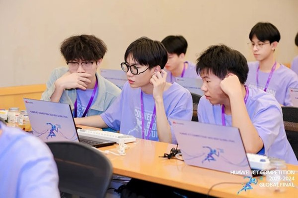
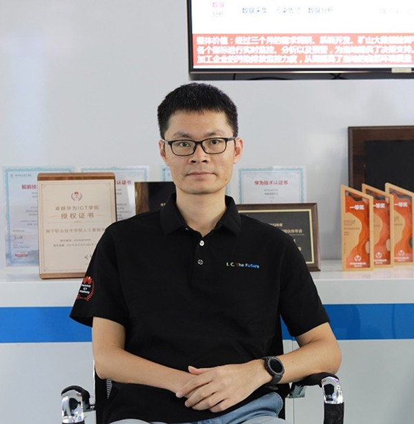
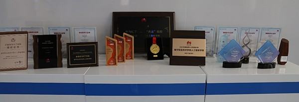

又是一届华为ICT大赛，截至目前，第九届华为ICT大赛中国赛区报名人数已超过11万。看到这一消息，南宁职业技术大学吴宇雄又回忆起上一届参赛的点滴。
2024年5月，对吴宇雄同学而言，有两件值得庆贺的事：一是这个月，学校获教育部批准设立南宁职业技术大学，这意味着，学校将在社会获得更高的认可度，对自己未来求职很有帮助；另一件事是，他携队友廖安杰、梁湘参加第八届华为ICT大赛，在导师邓启润的指导下，经过层层突围，最终获得了全球总决赛实践赛计算赛道特等奖。5月26日，在在场全球参赛学子的掌声和欢呼声中，他们登上了最高领奖台，那一刻，开心的笑容在团队小伙伴脸上恣意绽放。
谈到备赛的过程，吴宇雄说，专业深度融合、团队并肩作战，教师精心指导，多重BUFF叠加，让他们最终登上华为ICT大赛最高领奖台。
专业融合 拉满战斗值
第八届华为ICT大赛实践赛包含云、网络、计算和昇腾AI四个赛道，主要考察参赛学生的ICT理论知识储备、上机实践能力以及团队合作能力，检验学生的理论知识水平和动手能力。计算赛道考核知识涵盖openEuler、openGauss和Kunpeng应用开发三个技术方向。吴宇雄表示：“计算赛道考核知识面广，我们深知，要想在众多优秀团队中脱颖而出，必须发挥各自的专业优势，并与团队成员紧密协作。”
于是，三人小团组成立了，他们来自不同的专业，知识背景各异，但共同的目标让大家走到了一起。吴宇雄来自软件技术专业，以其编程能力和软件架构理解为团队提供技术支撑；廖安杰来自大数据技术专业，凭借数据洞察和分析能力为团队决策提供了数据驱动的洞察力；梁湘来自计算机网络技术专业，精通网络架构和安全，确保了项目的稳定运行和信息安全。
在项目的筹备阶段，三人通过头脑风暴，集思广益，将各自的专业知识和技能融合在一起，形成了一个多元化的创意方案。在比赛过程中，三人分工明确，各司其职，又相互协作，共同解决问题，推动项目向前发展。
通过团队合作，三位选手都发挥了自己的专业特长，同时也实现了知识的互补和技能的提升。吴宇雄说：“在全国总决赛中，我们团队仅是一等奖获得者，但我们持续努力，毫不退缩，事实证明：当个人的专业技能与团队协作精神相结合时，就能创造出无限的可能，实现超越个体的成就。”
以赛促学 拓展新领域
对于ICT学子而言，大赛结果固然重要，但通过大赛提升知识和实践能力，并在实践中掌握学习方法和技巧，更是让他们受用终身。
对这一点，第二次参加华为ICT大赛的廖安杰最有发言权。在第七届华为ICT大赛中，他和当年的队友就获得了全球总决赛实践赛-云赛道特等奖。“在上一届大赛中，我负责的是存储和大数据技术。事实上，存储技术我是从零开始学起的，但是通过大赛，我的技术得到了大大提升；我对鲲鹏技术也很感兴趣，因此本届大赛一启动，我就果断选择参加实践赛云赛道比拼，希望通过比赛，让我在鲲鹏技术领域有所精进。”
为了弄懂鲲鹏技术，廖安杰利用华为提供的实验手册进行实验，遇到问题时就会到华为鲲鹏计算官网去查找相关文档，或在鲲鹏社区寻找相关解决方案。“通过备赛，我对鲲鹏体系有了整体了解和认知，很快就能上手鲲鹏相关的软件使用了；而且大赛的赛题会深入到鲲鹏技术相应的实际应用场景中，在做题时，就感觉像是在做一个真实项目，这对我实践能力的提升大有帮助！”
负责openEuler技术的梁湘对此也深有同感，他表示，开始自己对openEuler操作系统不够理解，但因为备赛需要，强迫自己学习了大量相关华为线上课程并进行实操训练，技术水平大大提升：“没有所谓的天才，也没有不劳而获的回报，只有拼搏才能让人生更精彩。”他感慨说。
教学相长 激发新动能
对于ICT学子而言，大赛结果固然重要，但通过大赛提升知识和实践能力，并在实践中掌握学习方法和技巧，更是让他们受用终身。
对这一点，第二次参加华为ICT大赛的廖安杰最有发言权。在第七届华为ICT大赛中，他和当年的队友就获得了全球总决赛实践赛-云赛道特等奖。“在上一届大赛中，我负责的是存储和大数据技术。事实上，存储技术我是从零开始学起的，但是通过大赛，我的技术得到了大大提升；我对鲲鹏技术也很感兴趣，因此本届大赛一启动，我就果断选择参加实践赛云赛道比拼，希望通过比赛，让我在鲲鹏技术领域有所精进。”
为了弄懂鲲鹏技术，廖安杰利用华为提供的实验手册进行实验，遇到问题时就会到华为鲲鹏计算官网去查找相关文档，或在鲲鹏社区寻找相关解决方案。“通过备赛，我对鲲鹏体系有了整体了解和认知，很快就能上手鲲鹏相关的软件使用了；而且大赛的赛题会深入到鲲鹏技术相应的实际应用场景中，在做题时，就感觉像是在做一个真实项目，这对我实践能力的提升大有帮助！”
负责openEuler技术的梁湘对此也深有同感，他表示，开始自己对openEuler操作系统不够理解，但因为备赛需要，强迫自己学习了大量相关华为线上课程并进行实操训练，技术水平大大提升：“没有所谓的天才，也没有不劳而获的回报，只有拼搏才能让人生更精彩。”他感慨说。
教学相长 激发新动能
邓启润是南宁职业技术大学人工智能学院计算机网络技术专业带头人，在第八届华为ICT大赛中，他担任学校计算代表队的指导老师，说起华为ICT大赛，他既欣慰于同学们在大赛中的成长，也开心于自己在教学中获得的进步。
邓启润表示，同学们通过备赛，获得了更完整的知识体系，也接触到了行业，还拓展了国际视野，对他们的未来职业规划很有帮助。同时，因为指导华为ICT大赛，激发了自己终身学习的动能，提高了教学水平：“打铁还需自身硬，我认为：如果要把好的资源引入课堂，提高学生的技能水平，自己要先吃透整个知识体系。在指导学生备赛过程中，我通过深入学习、研究华为技术，帮助学生克服了问题；同时也激发了我的学习力和战斗力，通过日夜研究，我掌握到计算领域的前沿知识，了解到产业的需求，领悟到教学中存在的问题，对教学起到很大的帮助。”他表示，在未来教学中，他也将把大赛中了解到的产业最新需求传递给更多学生，促进他们的知识技能与产业对接，满足企业用人需求。
厚积薄发 再启新征程
事实上，在本届华为ICT大赛中，南宁职业技术大学收获满满，学校派出的战队不仅获得了实践赛计算赛道特等奖，另外还将网络赛和云赛道二等奖各一项收入囊中。
而成绩的取得，与学校一直以来深耕信息技术教育领域，与华为紧密进行校企合作是分不开的。2016年，学校即与华为共建华为ICT学院，通过“课赛证”一体化教学模式，校企合作精准共育进阶式ICT人才，被评为领先级华为ICT学院。九年来，学校培养了一千多位人工智能、云计算、数通、大数据等领域的华为认证人才，其中近百位学生通过了华为认证体系中最高级别的ICT技术认证——HCIE。
如今，新一届华为ICT大赛再度启航，对此邓启润老师有着更多期望：“我们看到，新一届大赛融入了更多自主创新的内容，如OpenHarmony技术，能帮助学校以ICT大赛为切入点，探索新的人才培养模式；另一方面，大赛还首次设置了教学赛，对于推动我们教师在教学改革、学院运营等方面持续进取有很大帮助！”
邓启润又开始紧张备战第九届华为ICT大赛了。心怀梦想，奋斗以成。衷心祝愿新一届南宁职业技术大学的参赛师生再获佳绩！